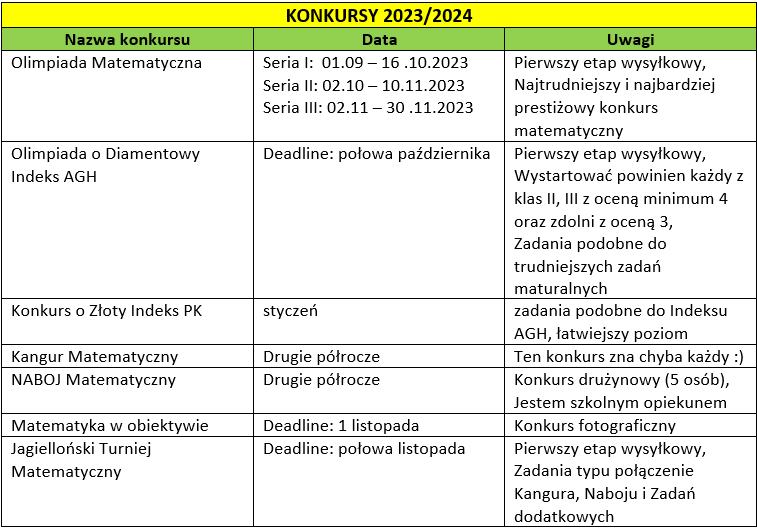

Motto
"Matematyka to nie znajomość wzorów, to raczej umiejętność ich poszukiwania."
"Powiedz mi, a zapomnę, pokaż mi, a zapamiętam, pozwól mi zrobić, a zrozumiem."
"In order to understand the universe, you must first understand the language in which the universe is written, and that language is mathematics."
Najnowsze informacje:
19.04.2024 (Piątek) - Warsztaty UJ
26.04.2024 (Piątek) - Warsztaty UJ
15.04.2024 (Poniedziałek) - 2G Kartkówka bieżąca - II termin
17.04.2024 (Środa) - 3F Kartkówka bieżaca (Analiza matematyczna - Granice
18.04.2024 (Czwartek) - 2G Sprawdzian - Geometria całość
19.04.2024 (Piątek) - 3F Sprawdzian (Poprawa) - Trygonometria
23.04.2024 (Wtorek) - 1F Sprawdzian - Przekształcenia wykresów funkcji
